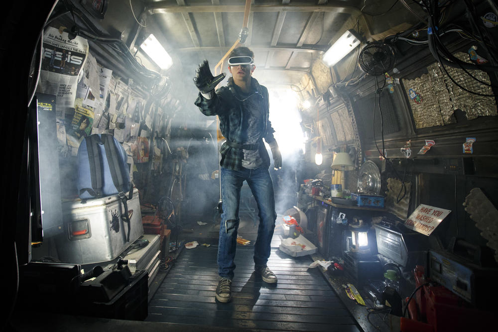

Ready Player One un monde d'évasion
L’Oasis, un univers au possibilité infini ou un moyen pour les humains de fuir leur réalité ?
 En savoir plusPollution numérique l'ignorance du grand public
Suivons-nous le même futur que le film Ready Player One ? L’impact caché des data centers sur la planète !
 En savoir plus
En savoir plus
Des solutions pour l'avenir
Avons-nous encore le temps de stopper la pollution numérique ? Les solutions à mettre en place !
 En savoir plus
En savoir plus